8. 3D Sensors & Depth Sensing
Stereo vision, Time-of-Flight, structured light, LiDAR, 4D radar, sonar, and 3D data formats
1. Taxonomy of 3D Sensors
The real world is three-dimensional, yet 2D images discard all depth information — a person at 2 m and at 20 m can project to the same pixel pattern. 3D sensing restores the lost depth dimension, enabling applications impossible with 2D data alone.
All 3D sensors divide into two fundamental categories based on whether they emit their own energy signal:
Passive sensors — do NOT emit energy; rely entirely on ambient light:
- Stereo cameras (e.g., ZED Mini)
- Moving single camera (Structure from Motion)
- Light-field sensors
Active sensors — emit their own signal (IR, laser, EM, acoustic):
- Time-of-Flight cameras (e.g., Kinect v2, Azure Kinect)
- Structured light (e.g., Kinect v1)
- LiDAR (e.g., Velodyne, Faro)
- 4D imaging radars
- Multi-beam sonars
Supportive Sensors
Active and passive 3D sensors are often combined with supportive sensors that do not measure depth directly but provide auxiliary position and orientation information:
- GPS — global position (latitude, longitude, altitude)
- Odometers — distance traveled from wheel rotation counts
- IMU (Inertial Measurement Unit): accelerometers (linear acceleration), gyroscopes (rotational velocity), magnetometers (heading), altimeters (elevation)
These are essential for aerial LiDAR (GPS/IMU tell you where the aircraft was oriented when each pulse fired) and mobile mapping.
| Direct Depth Sensors | Indirect Depth Sensors | |
|---|---|---|
| Mechanism | Physically measures distance (time-of-flight, triangulation) | Depth computed from image correspondences |
| Examples | ToF, structured light, LiDAR, radar, sonar | Stereo cameras, single moving camera |
| Works in darkness? | Yes (emit own signal) | No (need ambient light) |
| Texture dependence | None to low | High — need visual features to match |
2. Stereo Vision & Disparity
Stereo vision exploits the same principle as human depth perception: two slightly offset viewpoints create parallax — nearby objects shift more between the two views than distant objects.
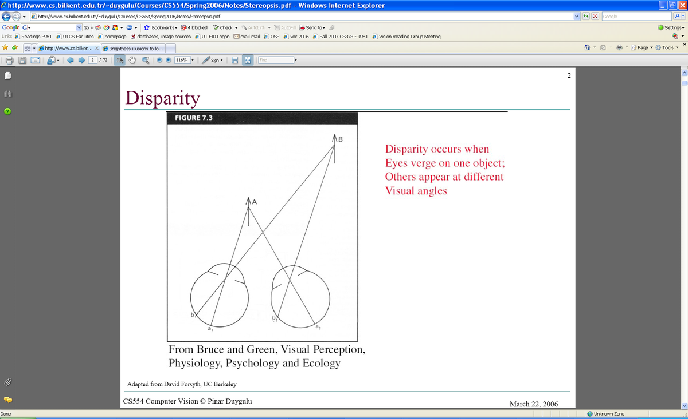
Stereo Disparity Equation
Consider left and right cameras separated by baseline $b$. A 3D point projects to pixel $p_L$ in the left image and $p_R$ in the right image. The disparity is $d = p_L - p_R$.
| Symbol | Meaning | Unit |
|---|---|---|
| $z$ | Depth to scene point | meters |
| $b$ | Baseline (distance between optical centres) | meters |
| $f$ | Focal length | meters |
| $p$ | Pixel width (physical size of one pixel) | m/pixel |
| $d$ | Disparity (pixel displacement) | pixels |
Derivation via similar triangles: left camera projects point $P = (X, Y, Z)$ to $p_L = f(X + b/2)/Z$, right camera to $p_R = f(X - b/2)/Z$. Disparity $d = p_L - p_R = fb/Z$, so $Z = fb/d$.
Key Relationships
| Relationship | Explanation |
|---|---|
| $z \propto 1/d$ | Depth is inversely proportional to disparity — double the disparity, half the depth |
| $z \propto b$ | Depth is directly proportional to baseline — wider baseline = better depth resolution for far objects |
| $z \propto f$ | Depth is directly proportional to focal length — longer focal length = better depth precision |
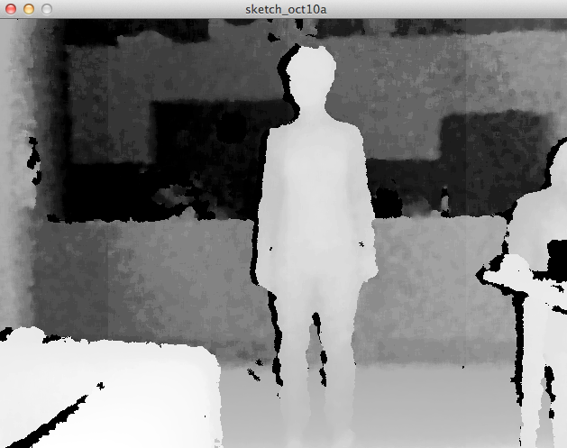
Disparity Map
By finding correspondences across the full image pair, we obtain a disparity map where each pixel value encodes the horizontal displacement between left and right views:
- Bright pixels = high disparity = close to camera
- Dark pixels = low disparity = far from camera
- Black/undefined = no match found
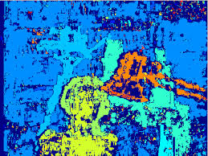
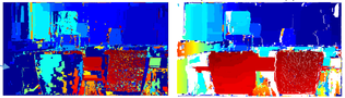
Stereo Enhancement Techniques
| Technique | Description |
|---|---|
| Watershed transform | Region-growing propagates known disparity into neighboring unknown pixels, using image contours as boundaries |
| Inpainting / Hole filling | Interpolates missing values from surrounding known values using diffusion or patch-based methods |
| CNN-based filling | Deep learning predicts dense, complete depth from sparse stereo input — state of the art |
| Bilateral / guided filtering | Smooths noise while preserving sharp depth edges at object boundaries |
- Correspondence problem: Finding which pixel in the right image corresponds to a given left-image pixel is the hardest part — closely related to feature matching
- Textureless surfaces: Blank walls and uniform regions have no unique features — disparity cannot be computed
- Occlusions: Parts visible in one camera may be hidden in the other — no correspondence exists
- Noise and mismatches: Lighting changes, shadows, and reflections cause incorrect matches
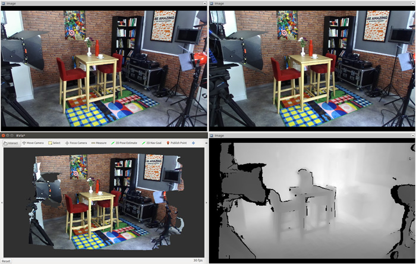
3. Time-of-Flight (ToF) Sensors
A ToF sensor measures depth by timing how long a light signal takes to travel to a scene point and return. It floods the entire scene with modulated infrared (IR) light and measures the phase shift independently at every pixel simultaneously — producing a dense depth map at real-time rates.
Direct time measurement:
$$\text{Distance} = \frac{t \times c}{2}$$ where $t$ = round-trip time, $c = 3 \times 10^8$ m/s (speed of light). Factor of 2 for the round trip.Phase-shift method (practical implementation):
$$\text{Distance} = \frac{c \cdot \phi}{4\pi \cdot f_\text{mod}}$$ where $\phi$ = measured phase shift (radians), $f_\text{mod}$ = modulation frequency (Hz).Direct nanosecond timing is impractical for consumer electronics. Instead, ToF sensors use continuous-wave modulation: the sensor emits a periodic signal, the reflected signal arrives with a phase delay, and the sensor correlates the sent and received signals to extract the phase shift (and thus the distance).
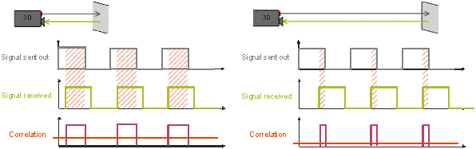
ToF Hardware — Kinect One (v2)
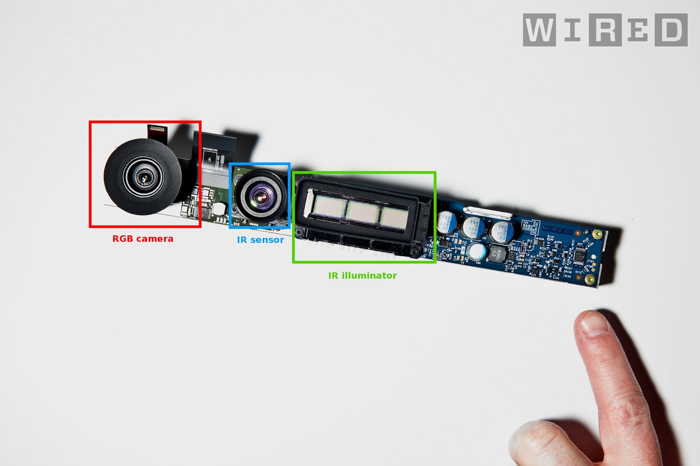
| Component | Function |
|---|---|
| RGB camera | Captures standard color images (not used for depth — provides color overlay) |
| IR illuminator | Emits modulated infrared light that floods the entire scene uniformly |
| IR sensor array | 2D pixel array sensitive to IR; measures phase shift at each pixel independently |
Kinect v2 / Kinect One (Xbox One): uses Time-of-Flight with IR illuminator + IR sensor array.
Azure Kinect (Microsoft): modern ToF successor with improved accuracy and range.
They look superficially similar but use completely different depth-sensing principles.
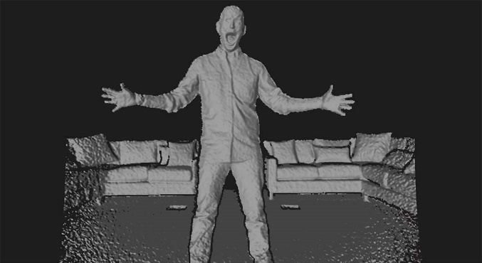
| Property | ToF Sensor |
|---|---|
| Type | Active (emits modulated IR) |
| Works in darkness | Yes |
| Typical range | 0.5 m to 4–5 m (consumer); longer for industrial |
| Output | Dense depth map at 30+ fps |
| Accuracy | ~cm level |
| Software complexity | Low (direct per-pixel measurement, no matching) |
| Main limitations | Multipath interference; strong sunlight can overwhelm IR sensor; limited range for consumer devices |
4. Structured Light Sensors
Structured light computes depth by active triangulation: a projector emits a known pattern (stripes, dots, grid) onto the scene; a camera at a known distance from the projector observes how the pattern deforms on 3D surfaces. The deformation encodes depth.
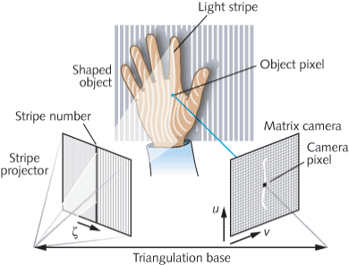
Triangulation Geometry
| Known | Description |
|---|---|
| Pattern element identity | Which specific stripe or dot was projected (each has a unique code) |
| Camera pixel position | Where that element appears on the camera sensor $(u, v)$ |
| Triangulation base $\zeta$ | Measured distance between projector and camera |
| Projection angle | Angle at which each pattern element was projected |
The unknown is depth — the distance to the surface where the pattern element landed. Basic trigonometry from the projector-camera-surface triangle yields it.
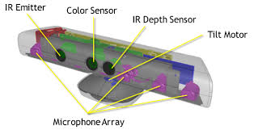
| Property | Structured Light |
|---|---|
| Type | Active (emits IR pattern) |
| Works in darkness | Yes |
| Outdoor performance | Weak — sunlight washes out the projected IR pattern |
| Typical range | 0.5 m to 4 m |
| Accuracy | ~cm level |
| Software complexity | High (pattern decoding, stripe identification, triangulation) |
| Best use cases | Indoor 3D scanning, gesture recognition, face scanning (e.g., Apple Face ID) |
5. Passive vs Active Sensors
| Passive Sensors | Active Sensors | |
|---|---|---|
| Signal emission | None — rely on ambient light | Emit own signal (IR, laser, EM, acoustic) |
| Examples | Stereo cameras, SfM, light-field | ToF, structured light, LiDAR, 4D radar, sonar |
| Works in darkness | NO | YES |
| Texture dependence | HIGH | LOW or NONE |
| Depth quality | Lower (noisy, incomplete) | Higher (dense, accurate) |
| Passive Stereo (ZED Mini) | Active ToF (Azure Kinect) | |
|---|---|---|
| In full darkness | Completely blind — no data | Works perfectly — full depth data |
| Wall reconstruction | Noisy, warped, wobbly surfaces | Thin, straight, geometrically accurate |
| Overall accuracy | Lower, significant distortion | Much higher, faithful to geometry |
The same building interior, same conditions: active ToF produced clean reconstructions with straight walls and proper angles; passive stereo produced coarse, sparse, warped point clouds.
6. LiDAR
LiDAR stands for Light Detection And Ranging (or Laser Imaging Detection And Ranging). It uses the same time-of-flight principle as ToF cameras but with a focused laser beam instead of a flood of modulated IR — enabling much longer range and higher accuracy.
Why Laser Light Is Special
| Property | Advantage for LiDAR |
|---|---|
| Monochromatic (single wavelength) | Precisely known interaction with atmosphere, water vapor, and surface materials — no ambiguity in scattering models |
| Very narrow beam | Remains tightly focused over long distances — maintains energy at hundreds of meters for precise point measurements |
LiDAR Scanning Mechanisms
| Mechanism | Ground Pattern | Common Manufacturers |
|---|---|---|
| Oscillating mirror | Sawtooth / Z-shaped | Leica, Optech (most common) |
| Rotating polygon | Parallel lines | Various |
| Nodding mirror (Palmer scan) | Elliptical | Various |
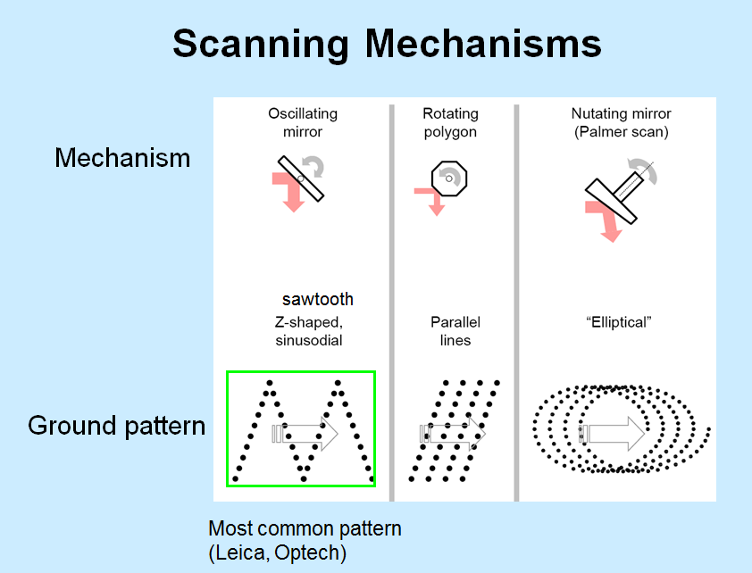
Velodyne LiDAR (Multi-beam, Real-time)
The Velodyne contains 8, 16, or 64 laser beams at different vertical angles that spin together via a rotating mechanism, producing full 360-degree scans 10–20 times per second.
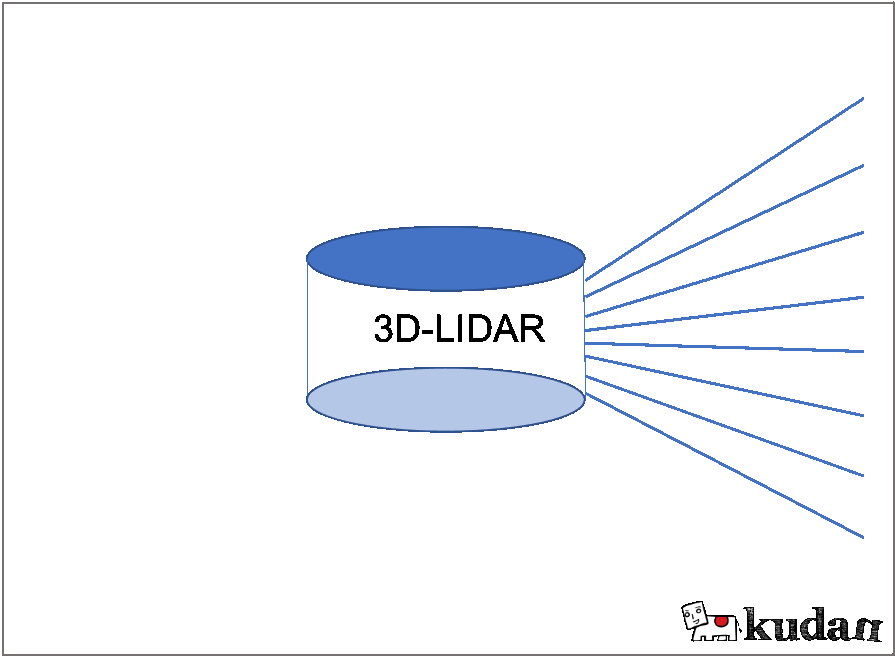
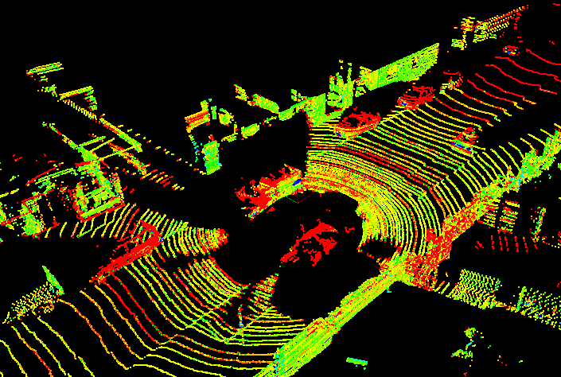
Faro LiDAR (Single-beam, High Precision)
The Faro uses a single laser beam with a rotating mirror, taking 2–20 minutes per scan but achieving millimeter precision. Used for architectural documentation and cultural heritage scanning.
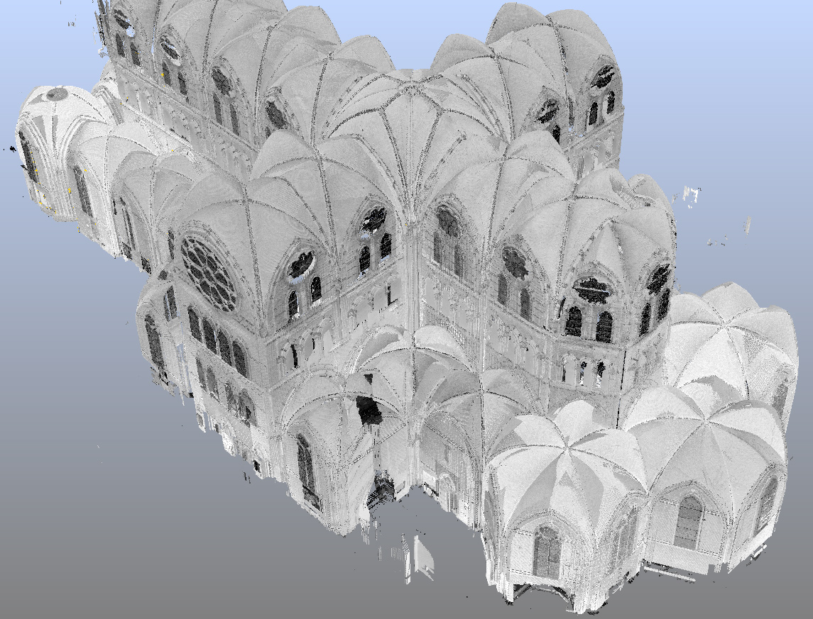
Aerial LiDAR
LiDAR mounted on aircraft or drones, combined with GPS (absolute position) and IRS/IMU (aircraft orientation at each pulse), for topographic mapping, forestry, and urban planning. A GPS ground base station provides differential correction.
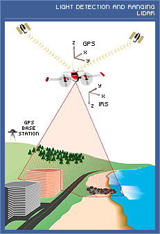
| Property | Depth Sensors (ToF, Structured Light) | LiDAR |
|---|---|---|
| Range | Short (0.5–5 m) | Long (tens to hundreds of meters) |
| Output | Dense depth map (per-pixel) | Sparse point cloud (discrete points) |
| Speed | Real-time (30+ fps) | Velodyne: real-time; Faro: 2–20 min |
| Accuracy | ~cm | ~mm to cm |
| Cost | $100–$1,000 | $1,000–$100,000+ |
| Primary use | Indoor, gaming, AR, robotics | Autonomous driving, surveying, mapping |
7. 4D Imaging Radar
A 4D imaging radar uses electromagnetic (EM) pulses (millimeter-wave radio waves) and extracts four dimensions of information from each detection.
| Dimension | What It Measures | How |
|---|---|---|
| 1. Distance | Range to object | Time-of-flight: $D = tc/2$ |
| 2. Direction | Azimuth angle | Phase differences across antenna array (beam-forming) |
| 3. Height | Elevation | Vertical antenna array elements |
| 4. Speed | Radial velocity | Doppler effect — frequency shift of reflected signal |
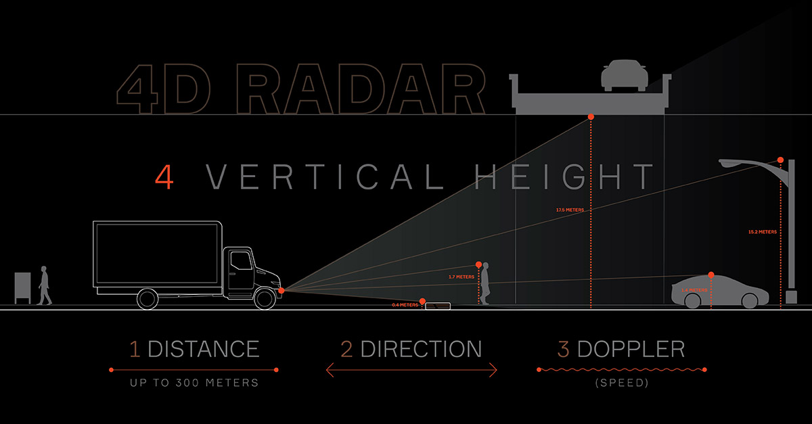
The Doppler Effect (4th Dimension)
When an object moves toward the radar, reflected radio waves are compressed (shifted to higher frequency). When moving away, waves are stretched (lower frequency). The magnitude of the frequency shift is directly proportional to the object's radial velocity.
This is the critical differentiator of 4D radar: it senses not only where objects are but also how fast they are moving — invaluable for predicting whether a car ahead is braking, accelerating, or stationary.
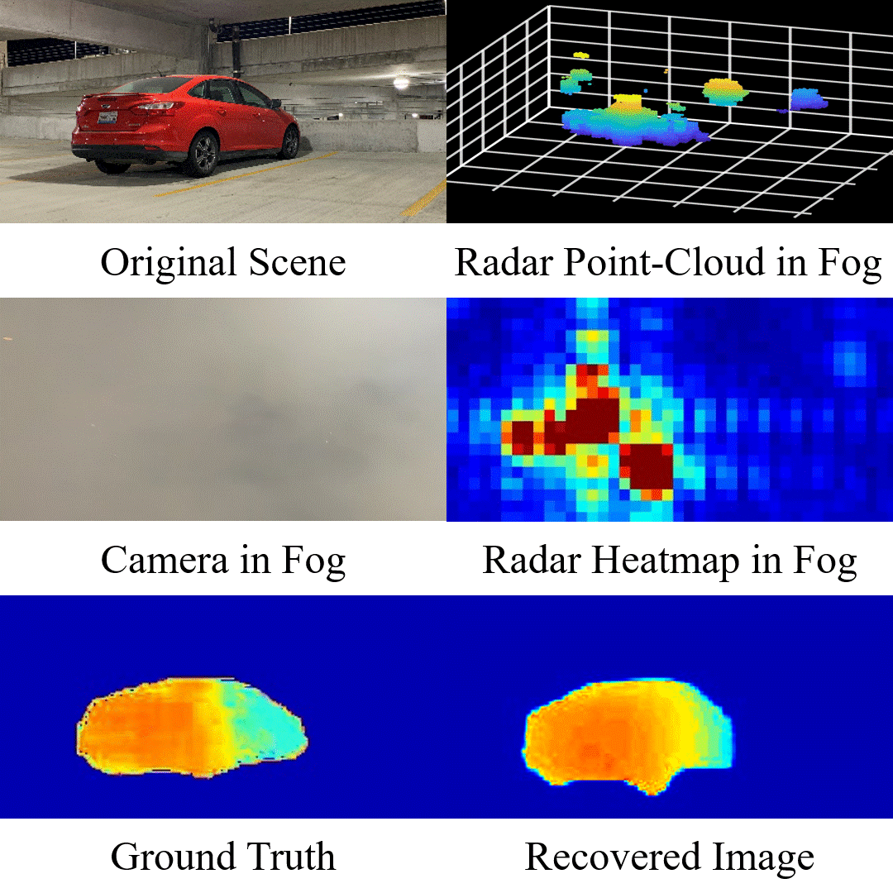
| Property | 4D Radar |
|---|---|
| Signal type | Electromagnetic (millimeter-wave radio) |
| Range | Up to 300 m |
| Weather robustness | Excellent — works in rain, fog, snow, dust, darkness |
| Unique capability | Direct velocity measurement (Doppler) |
| vs LiDAR | Lower spatial resolution, but all-weather |
| Primary use | Automotive ADAS, autonomous driving |
8. Multi-beam Sonar
Multi-beam sonar uses acoustic pulses (sound waves) for underwater 3D sensing. Light and radio waves attenuate rapidly underwater and are useless beyond a few meters — only acoustic waves propagate effectively.
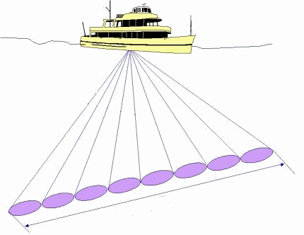
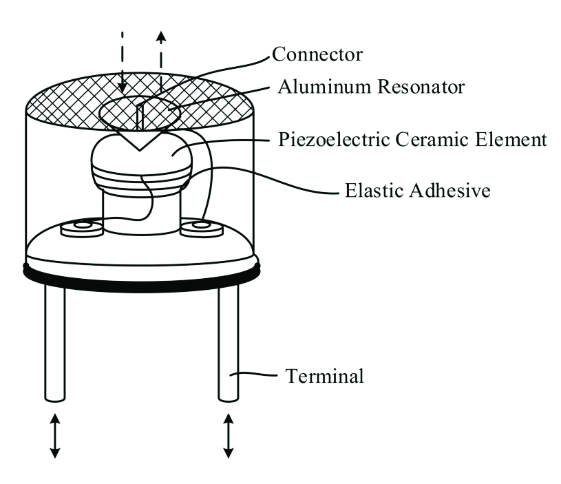
Sonar provides 3 dimensions of information: distance (range), direction (beam angle), and seabed material type (inferred from acoustic return character — hard rock reflects sharply; soft mud absorbs and scatters).
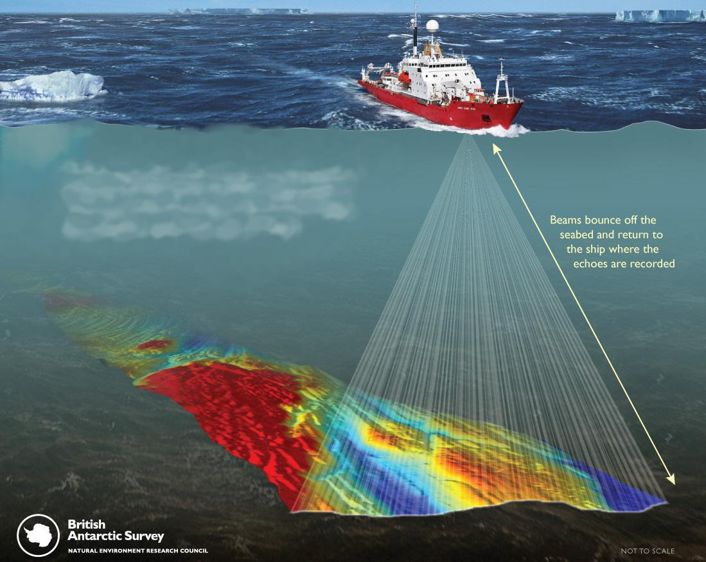
9. Sensor Comparison
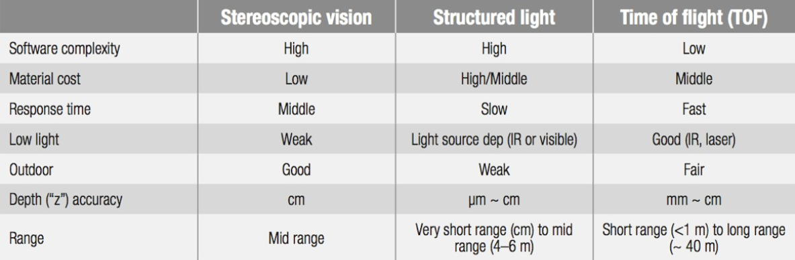
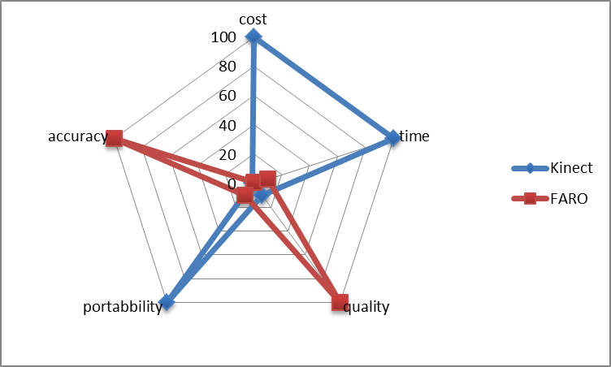
| Sensor Type | Signal | Passive/Active | Range | Speed | Cost | Weather | Primary Use |
|---|---|---|---|---|---|---|---|
| Stereo Camera | None (passive) | Passive | Mid | Real-time | Low | Poor (needs light + texture) | Robotics, ADAS |
| Structured Light | IR pattern | Active | Short (~4 m) | Medium | Medium-High | Indoor only | Gaming, face scan |
| ToF Camera | Modulated IR | Active | Short-Mid | Real-time | Medium-High | Fair | AR, indoor mapping |
| LiDAR (Velodyne) | Laser pulse | Active | Long (100+ m) | Real-time | High | Good | Autonomous driving |
| LiDAR (Faro) | Laser pulse | Active | Long | Slow (min) | Very High | Good | Surveying, heritage |
| 4D Radar | EM pulse | Active | Up to 300 m | Real-time | Medium-High | Excellent (all weather) | Automotive |
| Multi-beam Sonar | Acoustic pulse | Active | Underwater | Medium | High | N/A (underwater) | Marine mapping |
Kinect vs Faro — Trade-off Summary
| Metric | Kinect (Depth Sensor) | Faro (LiDAR) |
|---|---|---|
| Cost | Excellent (~$100–200) | Poor (tens of thousands) |
| Speed | Excellent (real-time, 30 fps) | Poor (2–20 min/scan) |
| Quality | Low–Medium | Excellent |
| Portability | Excellent (small, handheld) | Low–Medium (tripod) |
| Accuracy | Low (~cm) | Excellent (~mm) |
10. 3D Data Representation Formats
Once depth data is acquired, it must be stored and processed in a digital representation. Eight formats exist, each with fundamentally different trade-offs.
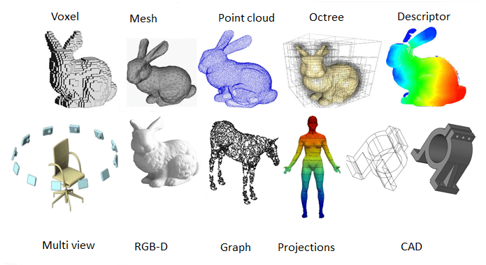
Voxel Grid
A regular 3D grid of cubic cells (voxels — volumetric pixels). Each cell is empty (0) or occupied (non-zero). Analogy: a 2D image is a grid of pixels; a voxel grid is a 3D grid of volume elements.
- Pros: Easy sensor data aggregation; volumetric; good for physics simulation
- Cons: Requires lots of memory — even completely empty cells must be stored; no GPU hardware support for efficient rendering
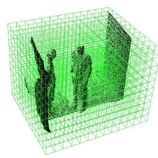
Octree
A hierarchical tree that adaptively subdivides 3D space. The root is one large cube; only regions needing detail are recursively divided into 8 sub-cubes (octants). Homogeneous regions remain undivided.
- Pros: Memory-efficient (1000x less than voxel grid for typical scenes); volumetric; easy sensor aggregation
- Cons: Additional processing overhead when updating (tree restructuring); no GPU rendering hardware support
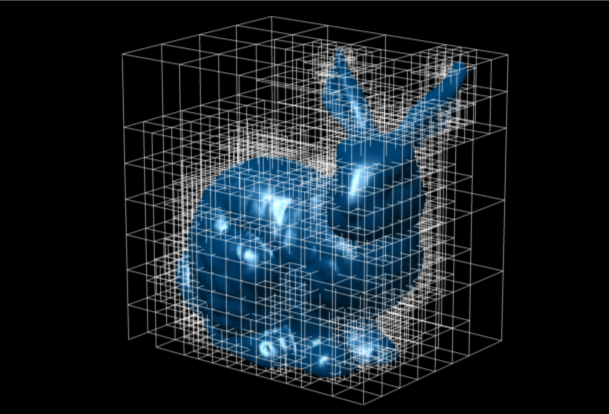
Point Cloud
An unordered set of 3D points $(X_i, Y_i, Z_i)$ representing object surfaces. Points may carry additional attributes: color, intensity, surface normal, classification. This is the native output of LiDAR sensors.
- Pros: Easy sensor aggregation (just append points); can accurately represent complex shapes
- Cons: No surface connectivity; high memory (12+ bytes per point, millions of points); difficult to convert to mesh
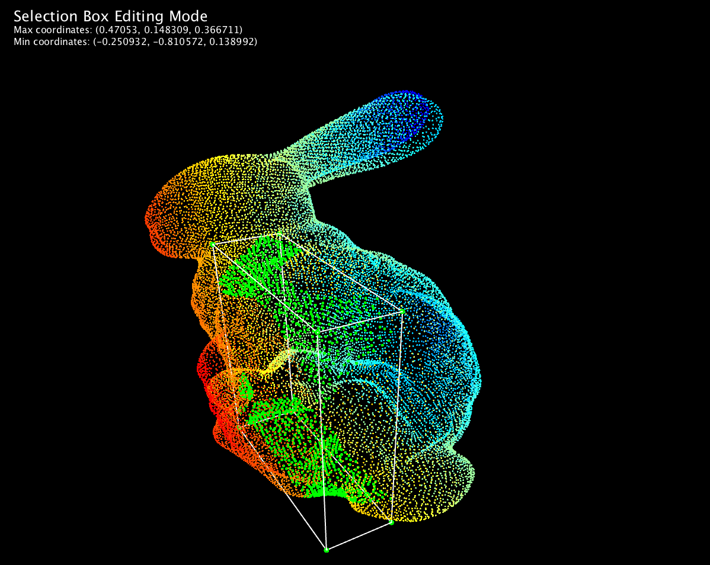
Polygonal (Mesh) Model
Vertices, edges, and faces (triangles) form the standard computer graphics representation. GPUs are fundamentally designed to process triangles at extreme throughput.
- Pros: Best for GPU rendering and photorealism (native GPU format); compact memory; supports texturing, shading; good for physics simulation
- Cons: Does NOT allow direct sensor data aggregation — converting raw sensor data to a clean mesh (surface reconstruction) is expensive and error-prone
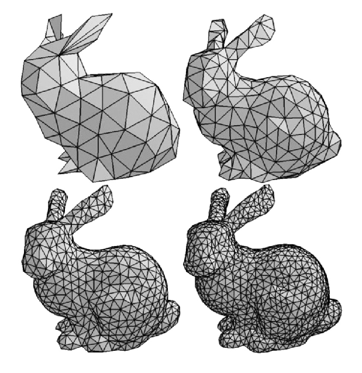
RGB-D Image
A color (RGB) image paired with a depth (D) image, pixel-aligned. The direct output of ToF cameras and structured light sensors. Brighter depth pixels = closer.
- Pros: Direct sensor output; easy to visualize; low memory
- Cons: Captures only one viewpoint (technically "2.5D"); requires camera pose knowledge to aggregate multiple frames into a 3D model
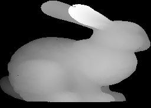
Multi-view Sequences
RGB images from multiple camera viewpoints with known camera poses. No depth is directly measured — just photos from many angles.
- Pros: Low memory (just 2D images + pose metadata)
- Cons: No 3D model as-is; requires further processing (SfM, MVS, NeRF, Gaussian Splatting); not suitable for large complex scenes without dense coverage
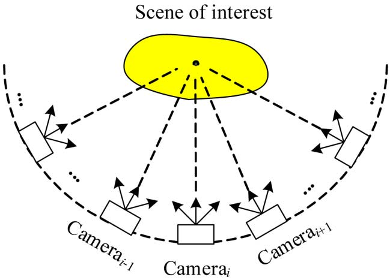
NeRF (Neural Radiance Field)
A neural network (MLP) that learns a continuous 3D scene representation. Given any 3D position and viewing direction, it outputs color and density. The entire scene is "baked" into the network weights.
- Input $\mathbf{x} = (x, y, z)$: 3D spatial coordinates
- Input $\mathbf{d} = (\theta, \phi)$: viewing direction (spherical angles)
- Output $\mathbf{c} = (r, g, b)$: color (view-dependent)
- Output $\sigma$: volume density (view-independent — matter either exists at a location or it doesn't)
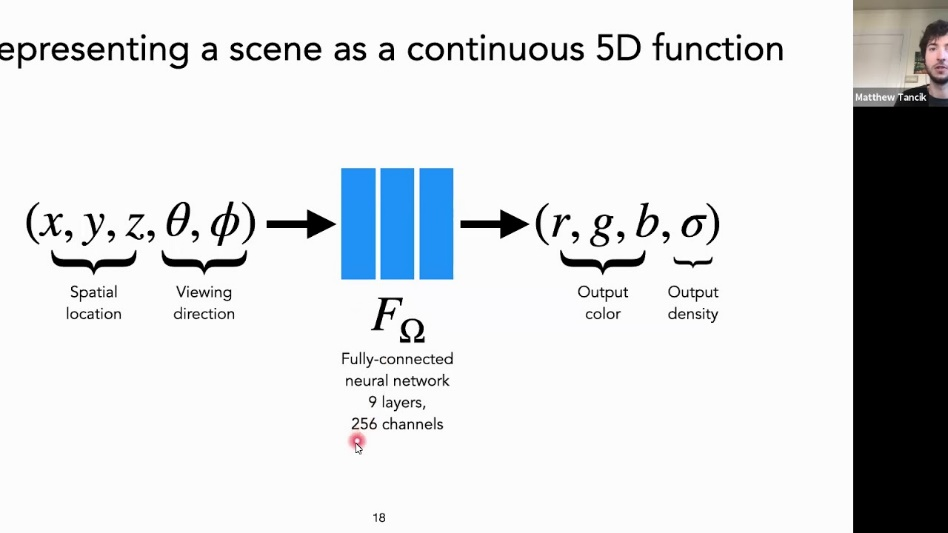
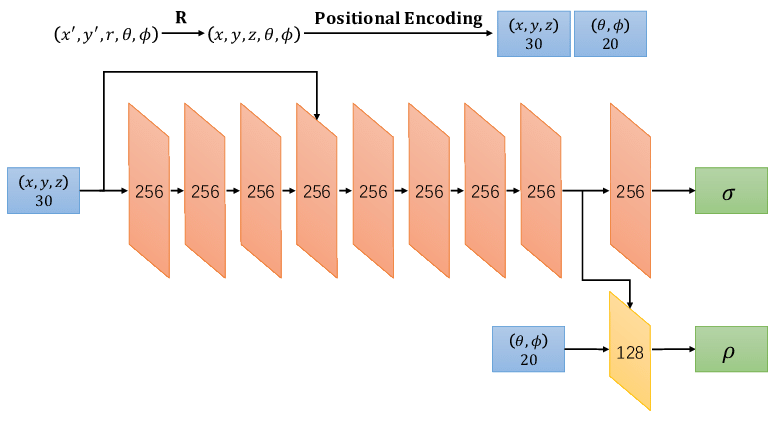
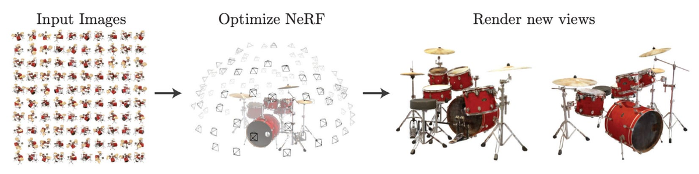
| Property | NeRF |
|---|---|
| Memory | Compact (~5 MB of MLP weights for an entire scene) |
| Rendering quality | High — photorealistic novel view synthesis |
| Training time | Slow — hours of GPU computation per scene |
| Dynamics/updates | Not supported — scene is baked into weights |
Gaussian Splatting
Represents a 3D scene as a collection of 3D Gaussian ellipsoids, each with learnable position, shape (covariance), color (spherical harmonics), and opacity. Gaussians are projected ("splatted") directly onto the 2D image plane — much faster than NeRF's per-ray MLP queries.
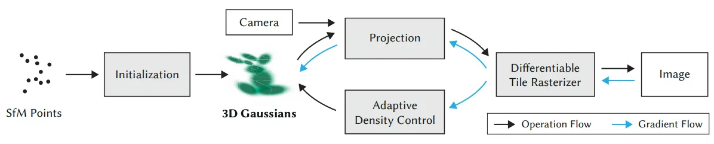
| Situation | Problem | Solution |
|---|---|---|
| Under-reconstruction | Not enough Gaussians — region is blurry/incomplete | Clone: duplicate the Gaussian, let both copies optimize independently |
| Over-reconstruction | Gaussians too large — sharp edges are blurred | Split: divide the oversized Gaussian into two smaller, more precise ones |
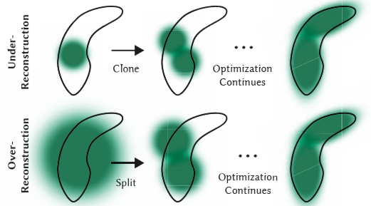
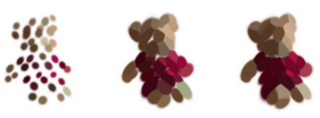
3D Format Comparison Summary
| Format | Sensor Aggregation | Memory | GPU Rendering | Dynamics | Photorealism | Volumetric |
|---|---|---|---|---|---|---|
| Voxel Grid | Easy | HIGH | No | Easy | Low | Yes |
| Octree | Easy | Low | No | Medium | Low | Yes |
| Point Cloud | Easy | HIGH | Moderate | N/A | Low | No |
| Polygonal Mesh | Hard | Low | Best (GPU native) | Easy | Best | No |
| RGB-D Image | Needs pose info | Low | Easy | No | Medium | No |
| Multi-view | N/A | Low | N/A | No | N/A | No |
| NeRF | No (retrain) | Low | Fast | No | High | Yes (implicit) |
| Gaussian Splatting | No (retrain) | Low | Fastest | Difficult | High | Semi |